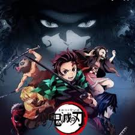
 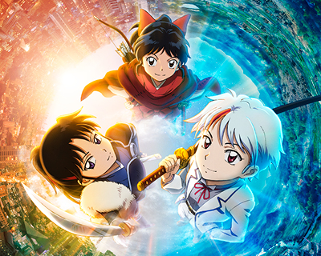
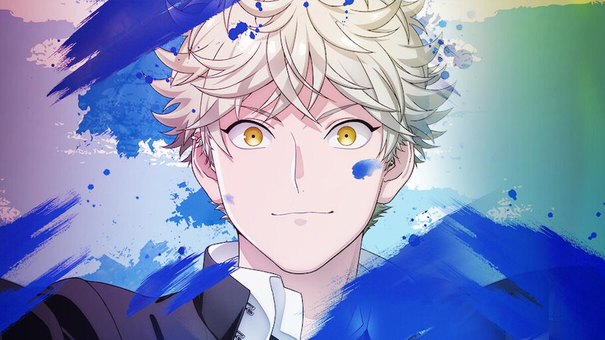
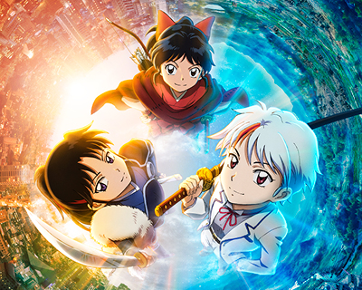
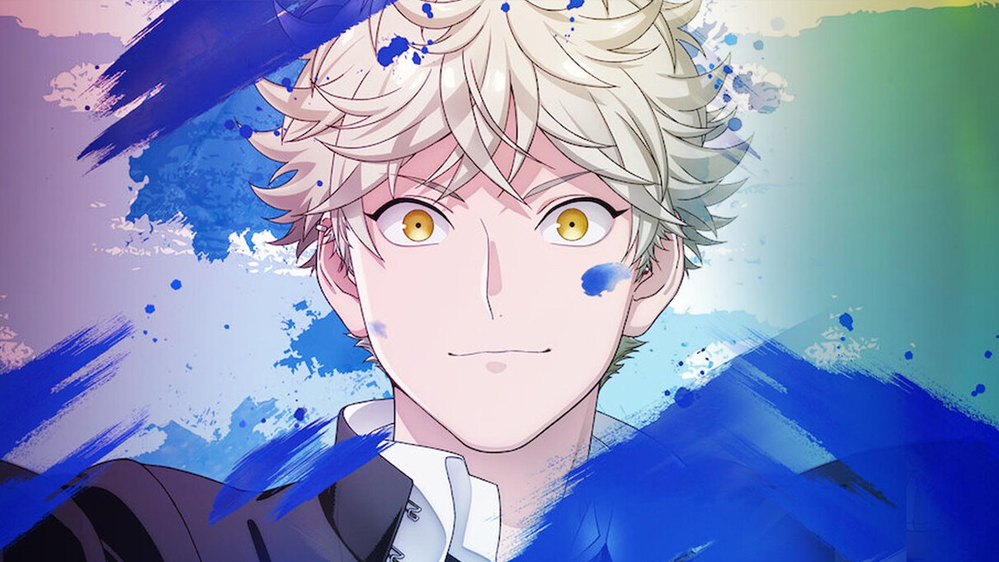
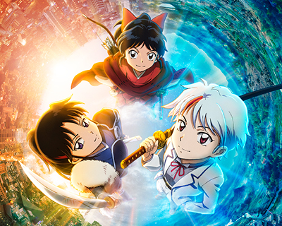
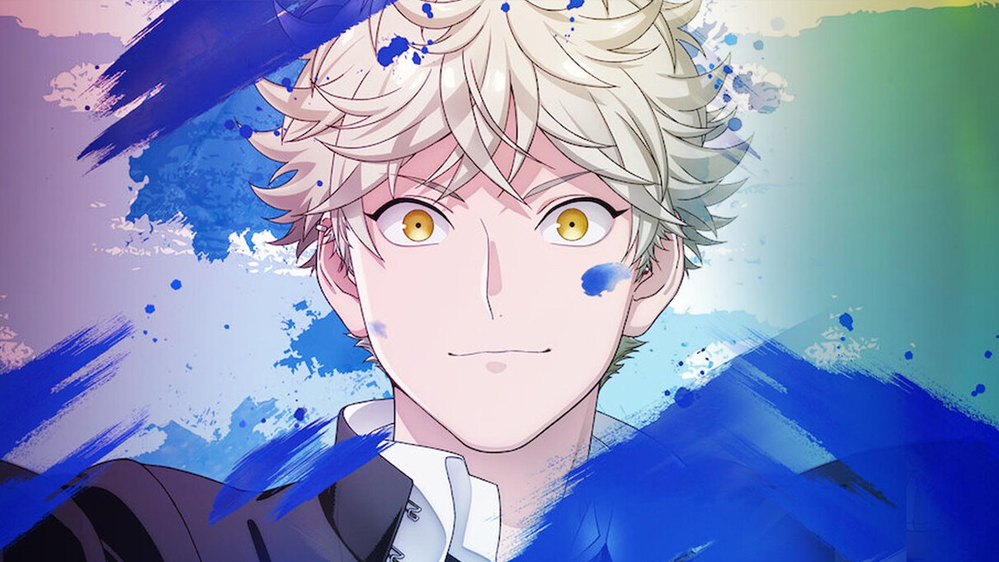
Fanpage de Anime y Manga
Lo mas destacados
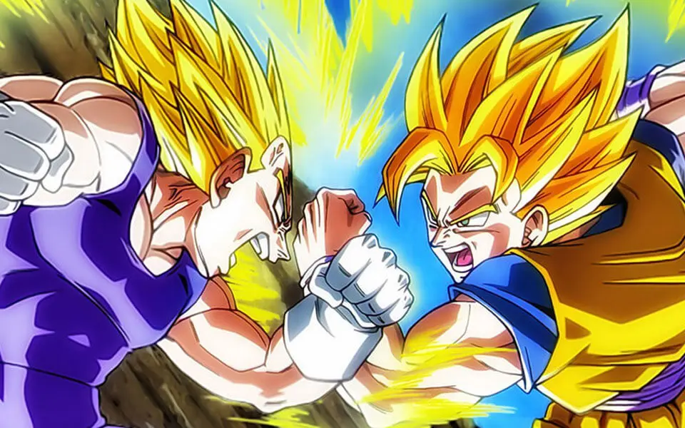
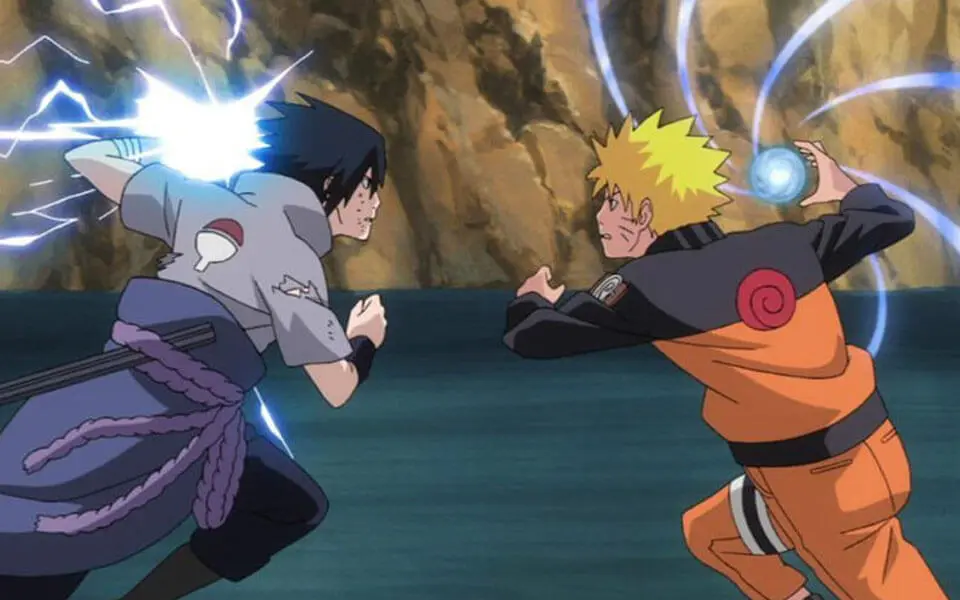
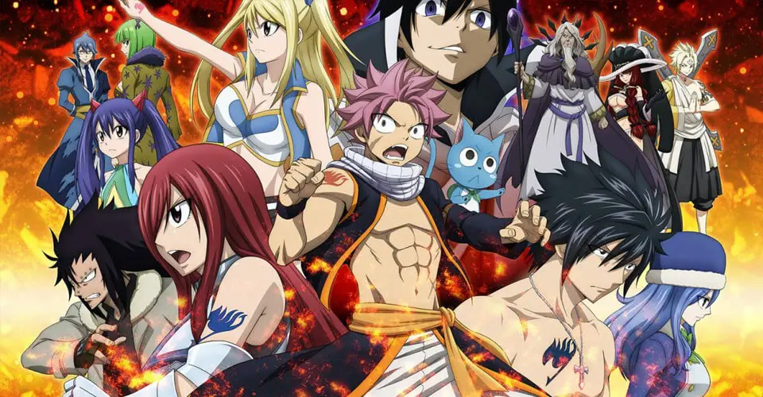
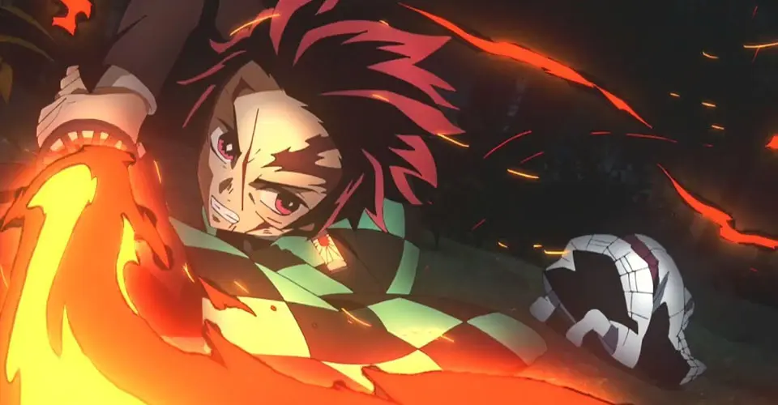
Videos
top 10 de la semana
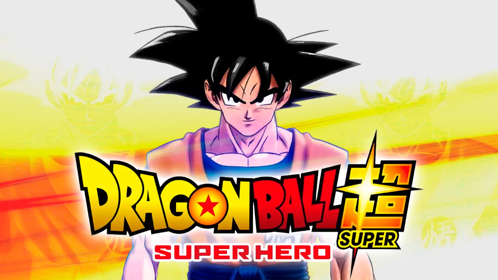
noticias
 12 series y películas anime de acción real que se estrenarán tarde o temprano
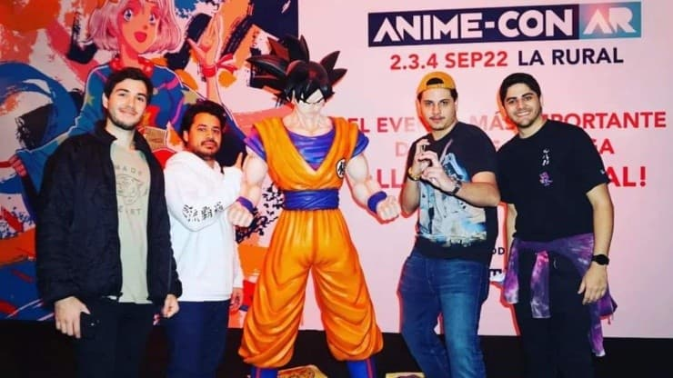 Entradas para la Anime-Con Argentina 2022: cuándo y cómo comprar la preventa
12 series y películas anime de acción real que se estrenarán tarde o temprano
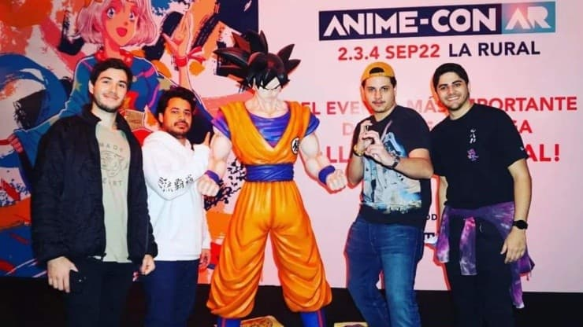 Entradas para la Anime-Con Argentina 2022: cuándo y cómo comprar la preventa